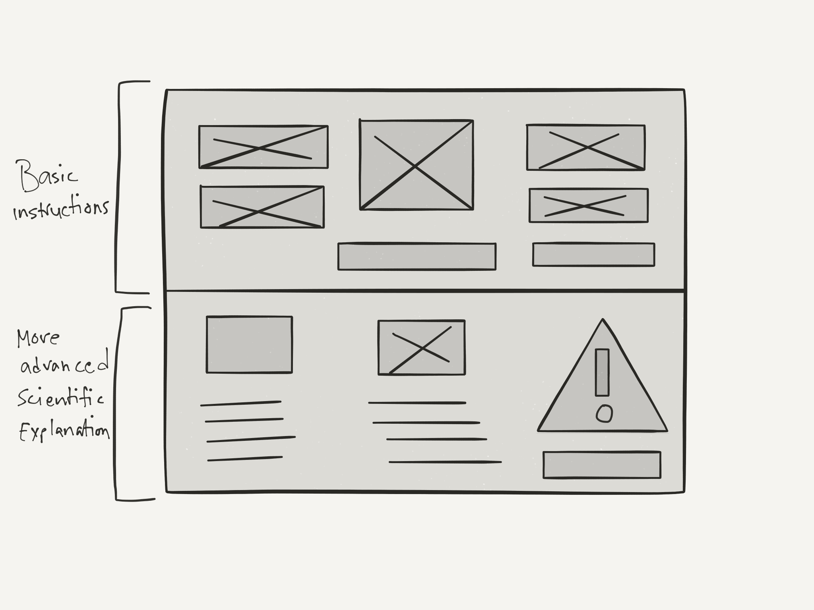
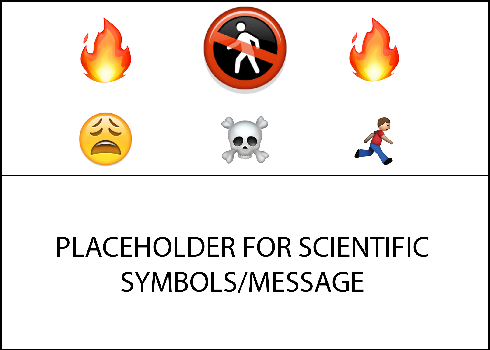
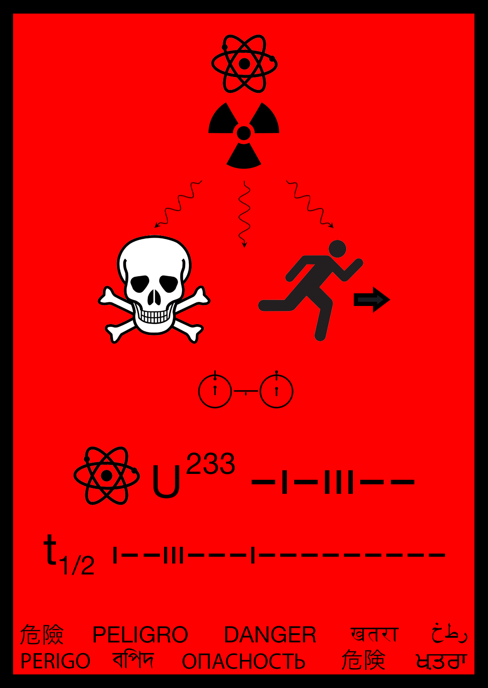

A Message for the Future
The Ultimate UI/UX Problem
In the area of UI and UX design, there are some some elements that designers take as a fundamental pillars on which all design stands. For as far as human history goes, we have always designed things. From ancient cave drawings all the way to software running on modern smartphones and upcoming VR and AR platforms. All of these designs have one thing in common - they were designed for human beings. Human beings who have the five senses: the sense of sight, hearing, taste, smell and touch. Designers across the millennia have relied on these fundamental senses that human beings poses to design the world around us, from messages to monuments.
In the 20th Century, humanity embarked upon a new era since it's existence - space travel. We have achieved many amazing feats in space travel which the cherry on top being landing on the moon. But there are two space programs that were milestones in humanity declaring their presence in the Universe. I am referring to the Pioneer and the Voyager programs. What's special about these two programs is that they sent out the first intergalactic messages on behalf of humanity. Pioneer 10 and 11 followed by Voyager 1 and 2 had the following plaques and disks attached to their bodies:


The idea behind these messages were that if any other intelligent life forms ever are able to intercept the spacecrafts, then hopefully they will be able to see these messages and know we have sent them. Perhaps they might even understand who we are and why we sent them. Herein lies the ultimate UI and UX challenge I alluded to before.
How can we possibly know what these intelligent life forms are? Furthermore, we have no idea if they have the same five senses we have. That brings up the question, if we have no idea who or what these life forms may be, how in the world can we send them a message? It's one thing to send a message to a human being who maybe speaks a language different than you or me, in that case we can rely on maybe using symbols and drawings to convey a message. But in the case of intergalactic alien lifeforms, how do we even know they have eyes to see with? Or any form of written language? These are the questions that makes designing a message for an alien species one of the hardest UI and UX problems ever.
A similar challenge that designers have had to tackle in the recent years has been dealing with nuclear waste. The Human Interference Task Force has had the very important task of writing a message for humanity ten thousand years in the future. See, the nuclear waste we have buried deep in the ground of the earth will take millions of years to decay until their emitted radiation drops to a level that is not harmful for life. However in ten thousand years, that nuclear waste will be still as harmful as it is today. But, we won't be around to warn the humans of that time, then who will? This is why the Human Interference Task Force was tasked on creating a message that could be recognized by humans of the 120th Century Earth.
This is one of the signs that they created:

As one can imagine, no language in human history has been known to last ten centuries. We really have no idea how humans will evolve in the next few thousands of years. This is why it makes it very difficult to design a message for the future. This is what makes this design problem among the hardest to solve.
For my design portfolio, I will be trying to tackle the latter problem of designing a message for humans of 120th Century Earth to warn them of the danger of nuclear waste areas.
Requirements for The Message:
According to the Human Interference Task Force
- that it is a message at all
- that dangerous material is stored in a given location
- information about the type of dangerous substances
- The message needs to have instructions
- To stay away
- What to do if contaminated
- Needs to catch attention
- Needs to survive outdoors for thousands of years
- Immune to corrosion
- Immune to decay and damage
- Information about the dangerous substances
Research into possible UI elements that can be used:
Symbols that can be used:
- Skull and Crossbones: Almost always interpreted as sign of death. Symbol has survived thousands of years. Very good candidate.

- Nuclear Radiation: Very well known now, but it's a very recent 20th century symbol. No guarantees it will survive the coming thousands of years.

- Exclamation: Generally treated as symbol of warning: Again, seems to be a very recent 20th century design. May mean something completely different in a thousand years.

- Stick Figures: Another strong candidate. Stick figures can be more expressive than abstract symbols. It maybe possible to show some actions using stick figures that will stand the test of time. We can look at cave paintings and understand that our ancestors were hunters. Stick figures have survived for thousands of centuries. Very strong candidate indeed.


Colors that can be used:
- Bright Colors that can catch attention
- Red
- Bright Yellow
- Bright Orange
- These colors are pretty common, but they are common for a good reason. These are colors that have come to convey urgent and seek for attention. Other colors like Blue or Green don't have the same effect. However, who knows if these colors will hold the same meaning in a thousand or more years.
Materials:
- One material that can last corrosion is plastic. If the message board is made of high grade thick plastic, that might be good enough for it to not erode over time. It will help to preserve the message for a long time.
- Highly reflective coating should be placed on top of the plastic so that it shines light to draw attention. It will also help it to be readable in low light conditions.
Technology:
- It may be beneficial to use some rudimentary digital technology to add to the message:
- Solar powered electronics ensure unlimited source of power
- Adding motion detectors can activate different things to fend off anyone who comes close
- Flashing lights will help scare anyone or anything coming close
- High pitched sirens will also deter anyone from coming close.
- Even possibility using a combination of flashing lights and sirens to scare anyone away might be very handy.
Wireframe for the Message

In analyzing the format of the message, it seems important that the message should be both cater to a scientific and non-scientific audience. Only this can ensure in all possible cases this message is understood properly and the correct actions are taken.
This implies that the entire message has to be broken into two seperate parts to keep things simple. The scientific message would cater to the scientific details of the hazard. Such as, the half life, how the material was produced, what kind of containment method was used to bury the radioactive material, etc. This can be beneficial in the case of a breach of containment; if there is anyone who is able to understand the science then perhaps they will be able to mitigate the danger better. The non-scientific message is really meant for anyone and everyone. It will use very basic simple imagery and signs to essentially tell the audience to run away from the message. Also it will have basic information on what are the symptoms of radiation poisoning. This will be conveyed using simple images as well.
Fun experimental design using emoji

While trying to come up with possible ways to symbolically represent a message, I strated considering images. Then I quickly realized that these days, a form of symbolic messages are extremely popular. These symbols are emoji. Some of these emoji are extremely expressive and many of these images translate accross languages. This seems like a very interesting way to embedded a message as images based on facial expressions, body gestures and skeumorphic images of real world objects are least likely to change over time. I generated this sample message using very simple five emoji.
- The center most prominent emoji is of a do not enter or tresspass symbol. It has a stick figure image of a person and a stamp on top of it which is commonly understood as "no". This emoji implies that no one is supposed to be here.
- On either side of the center emoji I have placed images of fire, which can be interpreted as fire, danger, heat, etc. This is another way to represent danger without using any text.
- Right under the center emoji, there is a cross bones emoji, which is meant to imply death.
- On the left of the crossbones emoji, there is an emoji of a face showing discomfort and sadness. This emoji portrays a general negative emotion meant to convey that people will feel sick and discomfort there. This emoji being right beside the crossbones is supposed to mean close assosiation to death.
- Finally the emoji to the right of the crossbones emoji implies, running. It is meant ot be the most import instruction, i.e. run away from here.
Critique of using emoji in this manner
- The symbols seem basic enough to survive the test of time and preserve its core meanings.
- The second row with the emoji showing discomfort followed by crossbones and then running might be problematic. How do we know in which order the audience will read it? It could meean: you will feel discomfort, then you will die and then you will runaway, instead of meaning, you will feel discomfort, then you will die, SO run away. There needs to be some kind of topographical order which has the highest chance of being read in the correct way.
- Using emoji it is difficult to convey any message more complicated than this without relying on emoji that use symbols and images that may not translate properly in thousands of years. Best approach seems to be to use these emoji but add some other kind of imagery to add extra meaning and order to the message.
Final Design of the Message

-
Adopting a portrait orientation:
- After carefully considering the way in which it makes most sense to read a posted notice, I realized the most effective way to read the message would be top to bottom. This is because all languages are written top to bottom and it is a reasonable assumption to make that in the future this practice will persist. A very good way to indicate to the user to read the message top to bottom is most likely a portrait orientation as compared to a horizontal or landscape orientation. This is a bit of a departure from my initial wireframes. Also it is worth noting that many notice boards used by government organizations warning the public often take a similar form and orientation.
- After struggling to come up with proper imagery that properly conveys the right message of the danger, I resorted to re-using some of the symbols already used in current warning messages that are designed for future generations. I am refering to the sign created by the Human Interference Task Force.
- I made some modifications where instead of using only the symbol for radiation, I also added the symbol for an atom. In case the symbol for radiation changes or becomes vague, the symbol for the atom should be a re-inforcing meaning to indicate Nuclear Radiation. I also used the symbol for death and the symbol for running to indicate that anyone who see's this message should run away or face death.
- The more novel portion of this poster is the bottom half. This is where I added more scientific information regarding what is actually dangerous about this message.
- The two circles right below the skull and running symbol are borrowed from the message plaques of the Voyager missions as referred to previously in this page. The two circles actually represent the two lowest states of a hydrogen atom. The vertical lines with the dots indicate the spin movements of the proton and electron. The spin-flip transition of a hydrogen atom’s electron has a frequency of about 1420.405 MHz, which corresponds to a period of 0.704 ns. Light at this frequency has a vacuum wavelength of 21.106 cm (which is also the distance the light travels in that time period). Below the symbol, the small vertical line—representing the binary digit 1—specifies a unit of length (21 cm) as well as a unit of time (0.7 ns). Both units are used as measurements in the other symbols [reference].
- Hopefully the hydrogen spin-flip diagram can imply the binary nature of the atom. This gives me the basis to encode important data in binary. This is exactly what happens right below the hydrogen spin-flip diagram. I picked an example of Uranium 233 radiation for this poster. To understand that the radiation is from Uranium 233 which has a half life of 160,000 years, the bare minimum information needed is the atomic number of Uranium which is 92 and the half life value which is 160,000. These two numbers are encoded in binary using the convention from the hydrogen spin-flip diagram. A vertical line represents a 1 and a horizontal line represents a 0. This was a simple way of showing binary value without using the two different numbers, 0 and 1.
- I also used the atomic symbol here to again tie the reference to the first atomic symbol indicating the following information is tied to the symbol on top of the poster. Next, I had to take a shortcut. I used the symbol for Uranium which is a "U" and next to it as the number 233 which refers to the particular type of Uranium isotope used at the location. The atomic number of Uranium is 92 which in binary is 01011100.
- To indicate the half-life I used a commonly used notation to represent half-life. Which is a lower case 't' with the fraction "1/2" beside it. This was the only way I could think of easily conveying that the following information is Uranium's half life. The half-life of Uranium is 160,000 years which in binary is 100111000100000000.
- The final bottom portion of the message contains the word "danger" in many different languages. In fact these are the most popular 10 languages on earth right now. This is a final redundancy to the message where if someone understood NOTHING of anything else in the poster, they might be able make out the danger this message is trying to convey from recognizing atleast 1 of the 10 languages here. The reasoning behind using these 10 lagnuages is that we know that human language always evolves. English and many other popular languages share very direct and strong roots in the past. We know that traces of Latin exists in English today that have carried over for thousands of years. So there is a high probablity that atleast one of these 10 languages may have descendents that might preserve a variant of the word "danger" and someone reading this message thousands of years in the future might read it and recognize what it means.
- I decided to use the same color as the sign developed by the Human Interference Task Force. The outlizes of text and images are black and the background of the entire message is red. This red is a 100% red without presence of any other colors.
- The color red helps catch attention which is why fire trucks are colored red. This sign needs to catch attention people fast.
- Red also has been used historically to represent hatred, anger, danger, warning or death. It is also the color of blood. Of all the colors in the spectrum, red seems to be the best candidate for this message.
- Most likely this warning message will be printed on strong high durability plastic. Most other types of materials will probably corrode away or get damaged through natural forces, but as plastic is an in-organic material and is non-biodegradable, it has the highest chance of surviving for thousands of years.